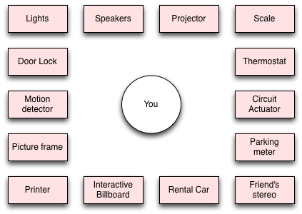
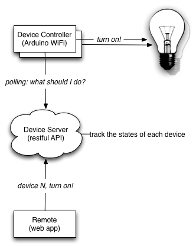
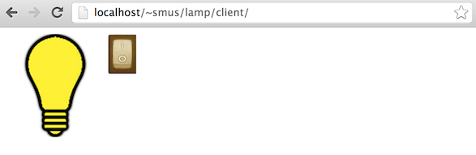
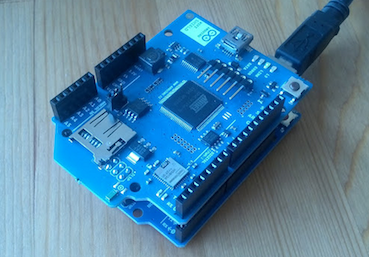

Internet Mashup of Things
Many new devices come with unexpected connectivity - often a WiFi connection that enables them to connect to a hotspot and the larger internet. Nest, a smart thermostat, was one of the first commercial products to do this. Many more indie projects are following suit, with an explosion of kickstarters like this teleoperated light, connected scale or this general purpose connected sensor. The idea of an Internet of Things, in which every appliance and object is somehow connected, has long been popular in academic circles, and this time around it feels like we're actually close.
If we think of these physical devices/appliances as web services with APIs, we can mash them up just like we did in the early days of the web, creating applications that are more useful than the sum of their parts. In this post I argue for using the web as the medium to tie everything together, describe a simple architecture for building networked physical devices and build a web lamp controlled by an arduino.
Web meets ubiquitous computing
The projects I mentioned above don't use proprietary home automation protocols like X10. Instead, they establish connections via the internet. Nest registers itself with a central server (operated by Nest inc) over WiFi. You can then control your thermostat by logging into their website at nest.com.
There's no need for heavyweight ISO666 standardization efforts. This is a very good thing, because it's really hard for anyone (including our industry) to agree on something new. Instead, we reuse a proven protocol that everyone's already agreed on: HTTP.
An Internet of too many things
Nest also provides Android and iOS apps to control your thermostat. But what happens when you have your thermostat, light bulbs, and home theater, scanner and printer all connected up to the internet in this fashion? Too many apps! Imagine you have all of these different devices, perhaps multiple of each in some cases:

It pains me to imagine an app for each of these different services - there are simply too many things to juggle. I would not want to install apps for each of these devices for reasons similar to why I would never install the United app: there is significant overhead to managing apps on your smart phone. They take up space on your home screens, you need to keep them up to date. Scott Jenson writes eloquently about this problem on his blog.
If each hardware manufacturer releases their device with a central registry and public API, however, third parties might be able to build on top of the services that these devices provide, and certainly some interesting and pleasant user experiences will arise in this nascent area.
A minimum viable physical web architecture
There are many discovery protocols (eg. UPnP, zeroconf, ...), and many messaging protocols (eg. TCP, HTTP, ...), and I won't argue for one over another. The technical tradeoffs of each of these is outside of the scope for this discussion. My approach was to devise the simplest proof-of-concept that would work anywhere without fancy protocols, only using widely available features available on the web, to enable a platform for prototyping, the goal being to establish useful and interesting interactions first, and implement the underlying technology later.
In general, we want to be able to interact with devices that are nearby and also with devices that are far away. With this constraint, even the simplest approach requires a server component. Here's a sketch:

In this setup, the controller listens to the server for what it should do. At the same time, the remote sends commands to the server based on user interaction. The server keeps track of the state of all of the devices it manages.
Example: cloud lamp
The above approach is to simply have a RESTful server. The remote can send commands to via POST requests, and the controller can poll for its new state periodically with GET requests. A simple API for a lamp might look like this:
GET /: Returns 1 if the lamp is on. Otherwise returns 0.POST /on: Turns the lamp on.POST /off: Turns the lamp off.
This API and the three components (server, client and device) above are enough to get a prototype off the ground. A simple implementation of all three pieces can be found in the Hello Lamp on github.
The server-side is written on AppEngine, and simply tracks state. The handlers all use CORS, which lifts the cross-domain security policy of the web, making it possible to POST to the lamp from any web page.
The client is a really simple web page with two ways of controlling the lamp: the toggle switch and speech recognition (available behind a flag in Chrome), which enables simple "lamp, turn off" and "on" commands.

Finally, the device itself is an Arduino Uno with a WiFi shield. One of the pins is connected to a relay which controls a power socket with the plugged in lamp. The program itself is nearly identical to the existing sample apps available for the WiFi shield.

Practical considerations
The solution described here is definitely not one to use in production for many reasons, including robustness, performance and security.
In practice, we'd probably want a server to control multiple devices, so each request should specify an ID representing the device. Also, continuous polling is a very inefficient approach, since every HTTP request has a lot of overhead. It's better to maintain open connection server-controller and server-remote connections to enable pushing of data directly. This connection should be bidirectional to let the device feed back to the remote as well as enabling control.
A promising startup working in the direction of making vision more real is electricimp. These guys provide connectivity through a SD card form factor they call an "imp". Though they have a proprietary communication protocol between their imps and their cloud (mainly for performance), they ultimately provide a RESTful web API to control each imp. Definitely looking forward to playing with their offerings.
Mash it up
Now we have a device registering with a public web server. The server provides an API for developers to access that device. Developers can then build applications around that API which interact with the device. This is no different from a regular web API, and at this point, all we have built is a glorified remote control that uses the web instead of IR for transmitting messages.
However! One of the great things about web APIs is that they can easily be mixed with one another to create something greater than the sum of the parts. This is known on the internet as a "mashup". The first mashups emerged about decades years ago, but are still an important part of the web landscape. I recently used a really nice one called lovely, which is a house hunting mashup combining Google Maps and craigslist. Mashup making services like Yahoo! Pipes and IFTTT have existed for a while. Notably, IFTTT includes support for some of the "smart" physical devices I mentioned in the beginning of this post.
To me, the truly interesting question around this physical web is the user's experience. Each of the various promises of device/appliance/thing control or automation is not terribly compelling. Why would I unlock my phone, find and run the lamp app, and find the right fixture? The alternative of walking up to the light switch and flipping it seems much more lucrative. That said, I'm optimistic that there are compelling user interfaces to be discovered, but they will only emerge on top of this physical web framework.
A plea for physical APIs
As we move into a world connected devices, we need to have a solid, widely available platform for communication between these devices. This infrastructure can and should ultimately be the web.
This opinion of mine is not zealotry, but completely practical: I do not want every device in my home to be stuck in an networked ecosystem provided by some single company. Whether it's an Android app, an iOS app, a web app, a universal dashboard on a smart phone, a voice controlled system in the living room, or (more likely) something completely different, any of these systems should be able to easily interface with any device in the world.
The recent stink around twitter no longer embedding instagram photos is just one example of important chunks of the internet become segregated from one another. This wall-building trend is alarming and dangerous to the integrity of the web platform, which is based on interoperability: cross-linking, cross-embedding, and API mashups. While this new web of things is still in its infancy, it's especially important that we nurture the same principles that made the early web so great.